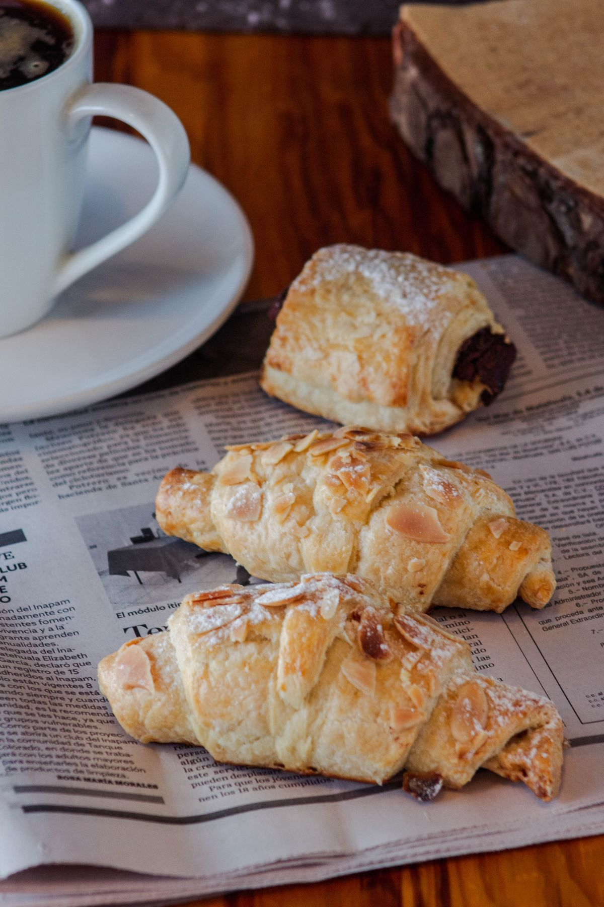
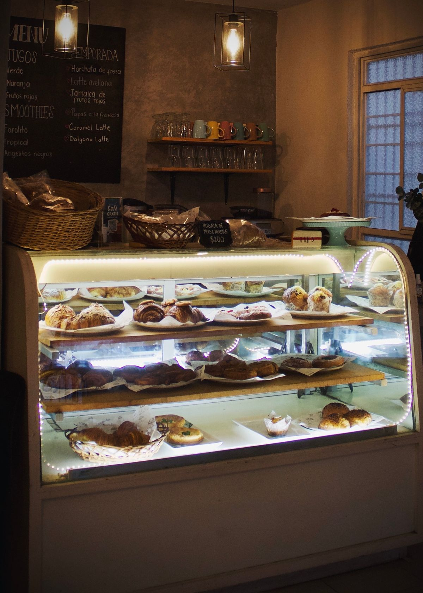
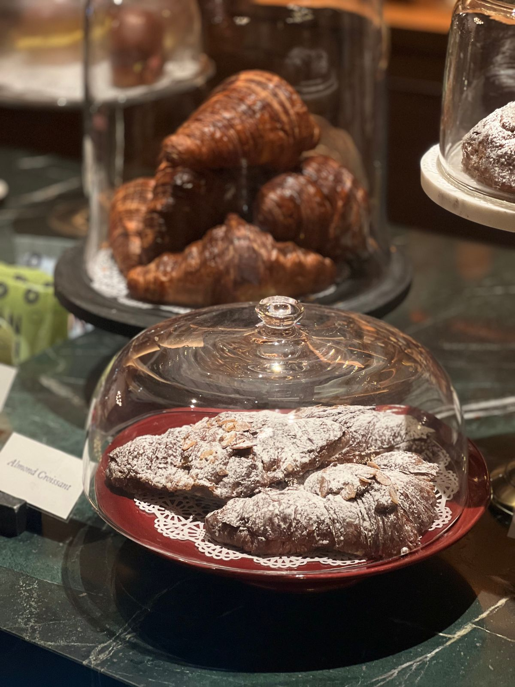

Visit Dulce Bakery and Cafe
A family-owned bakery-cafe in the Vista in Columbia, with scratch-made pastries and specialty lattes.
Address: 1213 Lincoln St, Columbia, SC 29201
Hours: Monday to Wednesday 7:30 AM to 6:00 PM. Thursday to Saturday 7:30 AM to 10:00 PM. Sunday 9:00 AM to 3:00 PM.
Phone: (803) 881-0028
Email: info@ilovedulce.com
Gallery



All gallery photos are stock photos, labeled as such. They show pastries and coffee, not this bakery-cafe's food.
Contact
Call (803) 881-0028 Email info@ilovedulce.com
Dulce Bakery and Cafe serves Columbia, SC. Questions? Call (803) 881-0028.